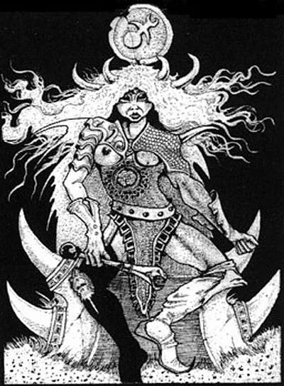
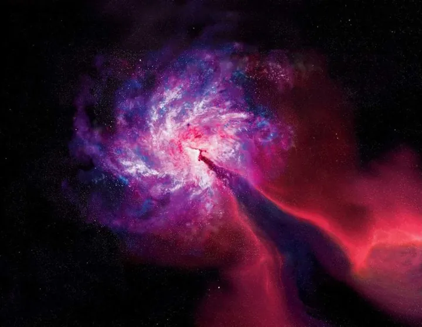
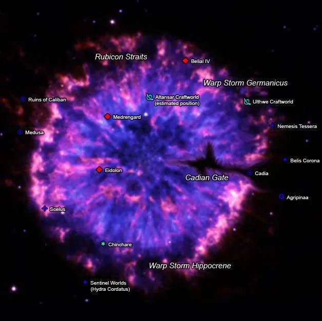
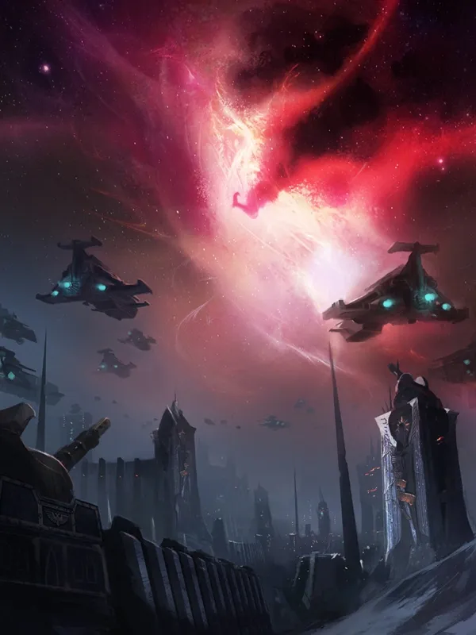
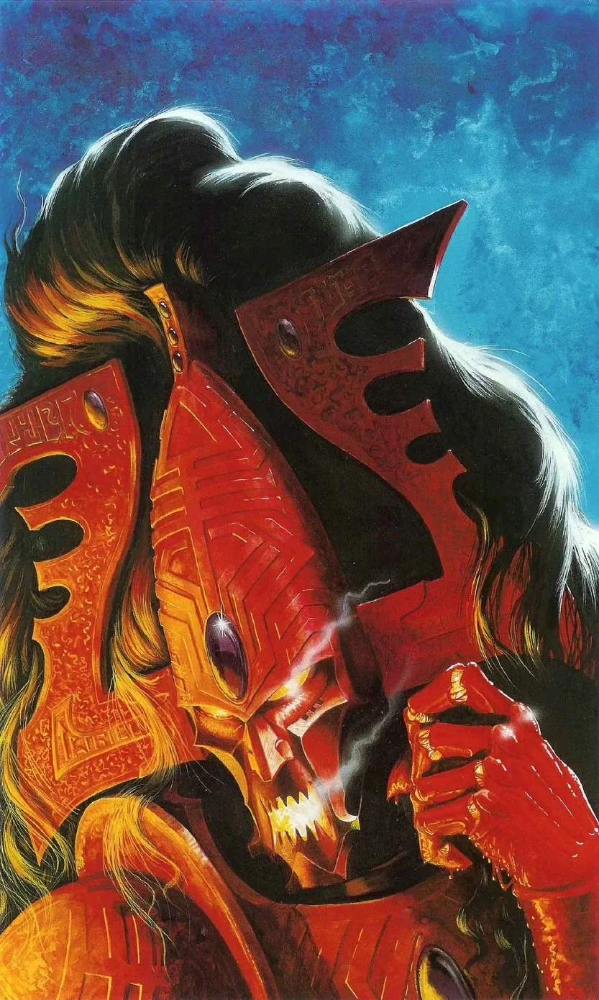
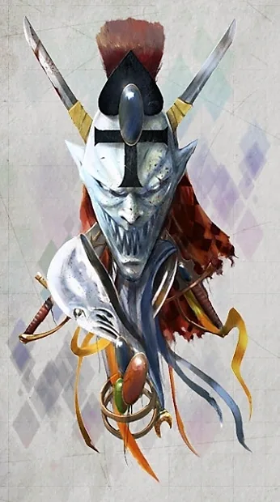
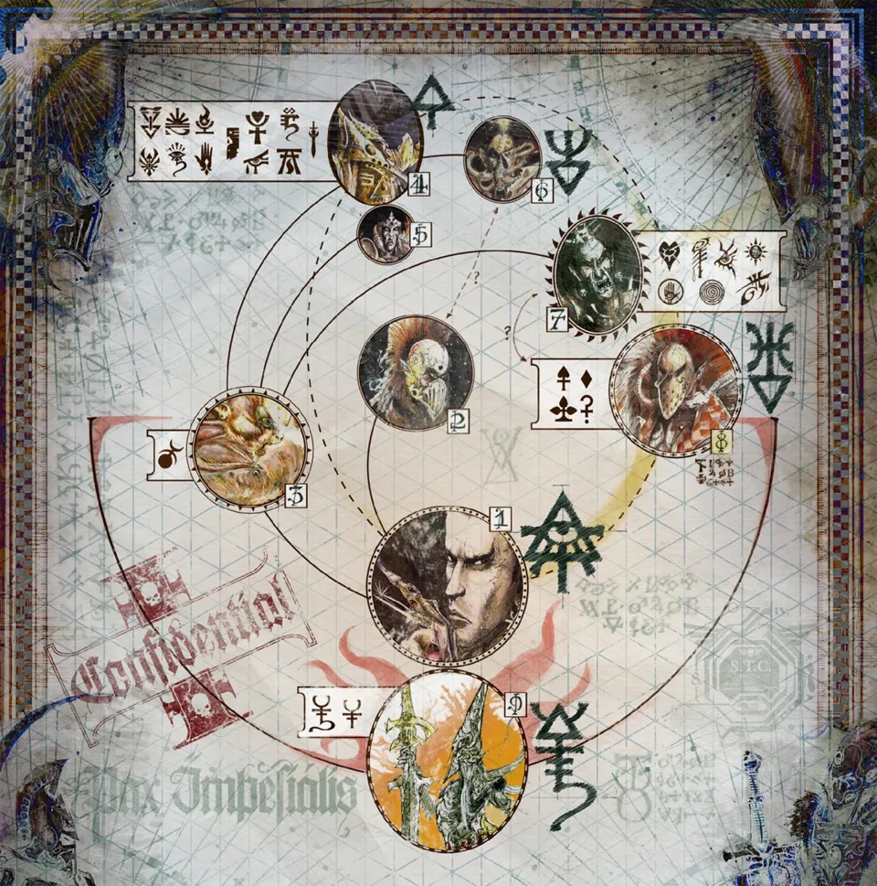
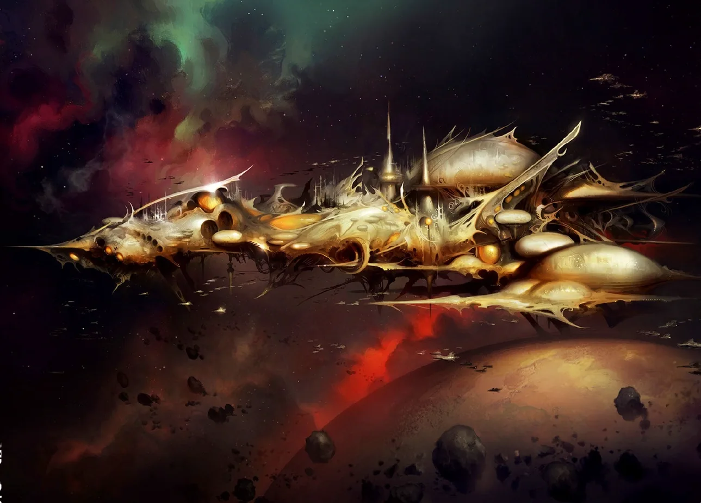
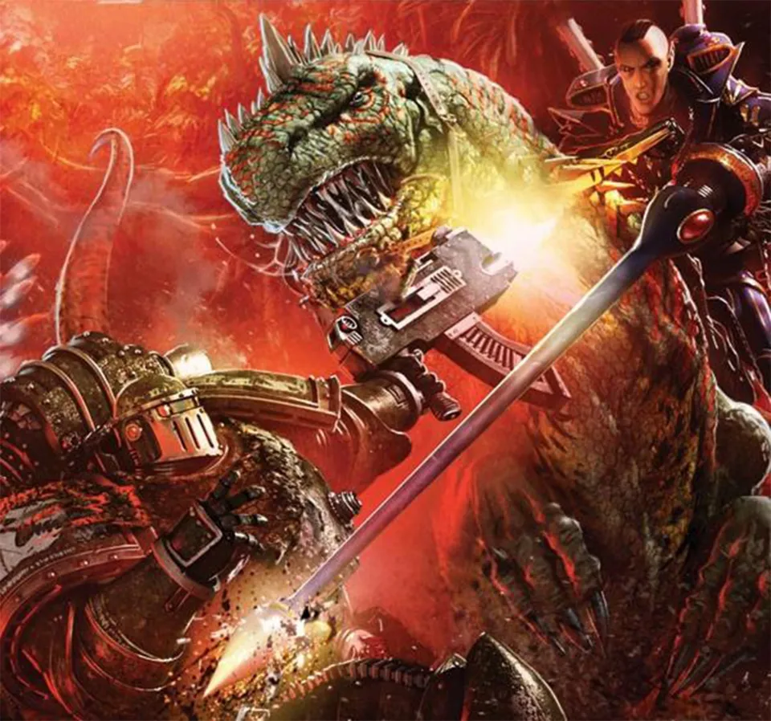

01ภาพรวม
หลัง War in Heaven Necron หลับใหล และ Old Ones หายไป ผู้ครองกาแล็กซีคนใหม่คือ Aeldari เผ่าที่ Old Ones สร้างขึ้นให้มีพลังจิตสูง อาณาจักรของพวกเขาแผ่ไปทั่วกาแล็กซีหลายล้านปี — ตอนที่มนุษย์บนโลกยังไม่ได้สร้างพีระมิดด้วยซ้ำ
แต่ในต้นสหัสวรรษที่ 30 (ไม่นานก่อนจักรพรรดิจะรวม Terra) อาณาจักรนี้ล่มสลายในชั่วพริบตา เหตุการณ์นี้เรียกว่า The Fall (การล่มสลาย) ชาว Aeldari ไม่ยอมเล่าเรื่องนี้ให้ "เผ่าที่ด้อยกว่า" ฟัง สิ่งที่จักรวรรดิรู้จึงมาจากเศษเสี้ยวของบันทึกต่าง ๆ
02อาณาจักรที่ไม่ต้องทำอะไรเลย
เทคโนโลยีของ Aeldari ก้าวหน้าจนไม่มีใครต้องทำงาน พวกเขาเชี่ยวชาญ Warp ถึงขั้นเปลี่ยนพลังจิตเป็นวัสดุอย่าง Wraithbone ได้ ไม่มีศัตรูที่ท้าทายได้ ไม่มีความยากลำบาก — และนั่นคือจุดเริ่มต้นของปัญหา
ราวสหัสวรรษที่ 24–25 ชาว Aeldari เริ่มรวมตัวเป็น Pleasure Cult (ลัทธิแสวงหาความสุข) เพื่อสัมผัสทุกความรู้สึกที่ชีวิตมีให้ ทั้งสุขสุดและเจ็บสุด อารมณ์ของ Aeldari รุนแรงกว่ามนุษย์มาก ความหลงใหลจึงดิ่งลึกไปเรื่อย ๆ จนถึงการทรมานและการฆ่าเพื่อความบันเทิง รัฐบาลล่มสลาย ถนนในเมืองกลายเป็นสนามล่าสังหาร
มีชาว Aeldari บางกลุ่มที่มองเห็นหายนะ:
- Exodite — หนีไปตั้งรกรากบนดาวชายขอบ ใช้ชีวิตเรียบง่ายแบบชนบท
- ผู้สร้าง Craftworld — เมื่อหายนะใกล้เข้ามา พวกเขาขึ้นเรือขนาดเท่าเมืองที่เรียกว่า Craftworld พาพืช สัตว์ และวัฒนธรรมหนีออกไป
03กำเนิดของ Slaanesh
เมื่อสิ่งมีชีวิตตาย วิญญาณจะไปสู่ Warp วิญญาณของ Aeldari มีพลังมากกว่ามนุษย์หลายเท่า การตายนับไม่ถ้วนอย่างสุดขั้วทั้งสุขและเจ็บทำให้ Warp ปั่นป่วนเป็นพายุ Warp ขนาดมหึมา — พายุเดียวกันที่ตัดขาดดาวมนุษย์ในยุค Age of Strife
ยิ่งกว่านั้น วิญญาณและอารมณ์เหล่านั้นเริ่มรวมตัวเป็นสิ่งมีชีวิต สิ่งที่หลับอยู่ใน Warp และฝันจากการกระทำของ Aeldari ความฝันนั้นย้อนกลับมาทำให้ Aeldari ยิ่งดิ่งลึก จนในต้นสหัสวรรษที่ 30 มันตื่นขึ้นอย่างสมบูรณ์
เมื่อ Slaanesh ถือกำเนิด "ลมหายใจแรก" ของมันดูดวิญญาณของชาว Aeldari แทบทั้งเผ่าเข้าไปในทันที แม้แต่ Exodite และชาว Craftworld ที่หนีไปแล้วก็ล้มตายจำนวนมาก psyker ของเผ่าอื่นทั่วกาแล็กซีเสียสติหรือตาย

04Eye of Terror
การตายครั้งใหญ่ที่ใจกลางอาณาจักรรุนแรงจนพลัง Warp ทะลักเข้ามาในโลกวัตถุ สร้างรอยแผลกว้างเกือบสองหมื่นปีแสงที่ไม่มีวันปิด ทุกวันนี้เรียกว่า Eye of Terror ภายในเวลาและกฎธรรมชาติบิดเบี้ยว ดาวเก่าของ Aeldari ที่เรียกว่า Crone Worlds ยังคงอยู่ข้างใน



หมื่นปีต่อมา Eye of Terror กลายเป็นที่หลบภัยของ Legion ทรยศ หลัง Horus Heresy และเป็นฐานที่ Abaddon ใช้เปิด Black Crusade บุกจักรวรรดิ
05ชะตากรรมของเทพ Aeldari
ชาว Aeldari มีเทพของตัวเองที่ก่อตัวจากความเชื่อของพวกเขาใน Warp สิ่งแรกที่ Slaanesh ทำคือล่าเทพเหล่านั้น เทพส่วนใหญ่อ่อนแอลงเพราะผู้ศรัทธาตายหมดและถูกกลืนกิน เหลือรอดเพียงสององค์:
Kaela Mensha Khaine
เทพแห่งสงครามที่ดวลกับ Slaanesh โดยไม่มีฝ่ายใดชนะ ตำนานบางฉบับเล่าว่า Khorne เข้ามาแทรก ร่างของ Khaine แตกเป็นเสี่ยงและกระจายไปอยู่ในโลกวัตถุ กลายเป็น Avatar of Khaine ที่หลับอยู่ใจกลางแต่ละ Craftworld — และเป็นเหตุผลที่ Khorne กับ Slaanesh เป็นศัตรูกันมาตลอด
Cegorach — เทพผู้หัวเราะ
เทพเจ้าเล่ห์ที่แอบซ่อนหลัง Khaine ระหว่างการดวล แล้วหนีเข้าไปใน Webway ยังคงแกล้ง Slaanesh และช่วยวิญญาณของ Harlequin ผู้รับใช้ของเขามาจนถึงทุกวันนี้


06Aeldari ที่เหลือรอด
ทุกวันนี้ เมื่อชาว Aeldari ตาย วิญญาณจะถูก Slaanesh กลืนกินทันที แต่ละกลุ่มที่รอดมาจึงหาวิธีต่างกันเพื่อเอาตัวรอด:
Craftworld (Asuryani)
ใช้ชีวิตตามวิถี Path ที่เข้มงวดเพื่อควบคุมอารมณ์ และเก็บวิญญาณไว้ใน Spirit Stone ที่ส่งเข้าสู่ Infinity Circuit ของ Craftworld เมื่อตาย (ดู Aeldari)
Drukhari
ชาว Aeldari ที่ไม่เคยเลิกความลุ่มหลง พวกเขาอยู่ในเมือง Commorragh ใน Webway จึงรอดจาก The Fall และยืดชีวิตด้วยการดูดกินความทุกข์ของผู้อื่น (ดู Drukhari)
Exodite
อาศัยบนดาวชายขอบอย่างเรียบง่าย ขี่สัตว์ยักษ์ และผูกวิญญาณไว้กับเครือข่ายพลังของดาว (World Spirit)
Harlequin
ผู้รับใช้ของ Cegorach เดินทางใน Webway แสดงละครเล่าตำนาน และเป็นผู้เดียวที่เดินทางไปมาระหว่าง Aeldari ทุกกลุ่มได้



07ผลต่อมนุษย์และยุค 40K
- ยุค Age of Strife จบ — การถือกำเนิดของ Slaanesh ทำให้พายุ Warp ที่ตัดขาดมนุษย์มา 5,000 ปีสงบลง จักรพรรดิจึงเริ่ม Unification Wars และ Great Crusade ได้ — โศกนาฏกรรมของ Aeldari คือโอกาสของมนุษย์
- เทพ Chaos องค์ที่สี่ — Slaanesh กลายเป็นหนึ่งในสี่เทพแห่ง Chaos ดู เทพเจ้าทุกองค์
- Ynnead ความหวังสุดท้าย — ชาว Aeldari เชื่อว่าเทพแห่งความตาย Ynnead กำลังก่อตัวจากวิญญาณใน Infinity Circuit และวันหนึ่งจะทำลาย Slaanesh ได้ ในยุคปัจจุบัน Yvraine และกลุ่ม Ynnari ปลุก Ynnead ขึ้นบางส่วนแล้ว
- คำเตือนถึงมนุษย์ — Aeldari มองมนุษย์ ("Mon-keigh") ด้วยความกลัวว่าจะซ้ำรอยความผิดพลาดของพวกเขา และใหญ่กว่าเป็นพันเท่า
08แหล่งข้อมูลและหมายเหตุ
เนื้อหาหน้านี้สรุปและแปลเป็นภาษาไทยจากบทความใน Warhammer 40k Wiki (Fandom) ซึ่งเรียบเรียงจากหนังสือ Codex, หนังสือชุด Horus Heresy ของ Forge World และนิยาย Black Library ด้านล่างนี้ (ตรวจสอบ ต.ค. 2026)
เนื้อเรื่อง Warhammer ถูกเขียนเพิ่มและแก้ไขมาตลอดหลายสิบปี ปี จำนวน และรายละเอียดบางจุดต่างกันไปตามหนังสือแต่ละเล่ม หน้านี้ใช้ฉบับที่แหล่งอ้างอิงส่วนใหญ่ยอมรับ และบอกไว้เมื่อมีหลายฉบับ